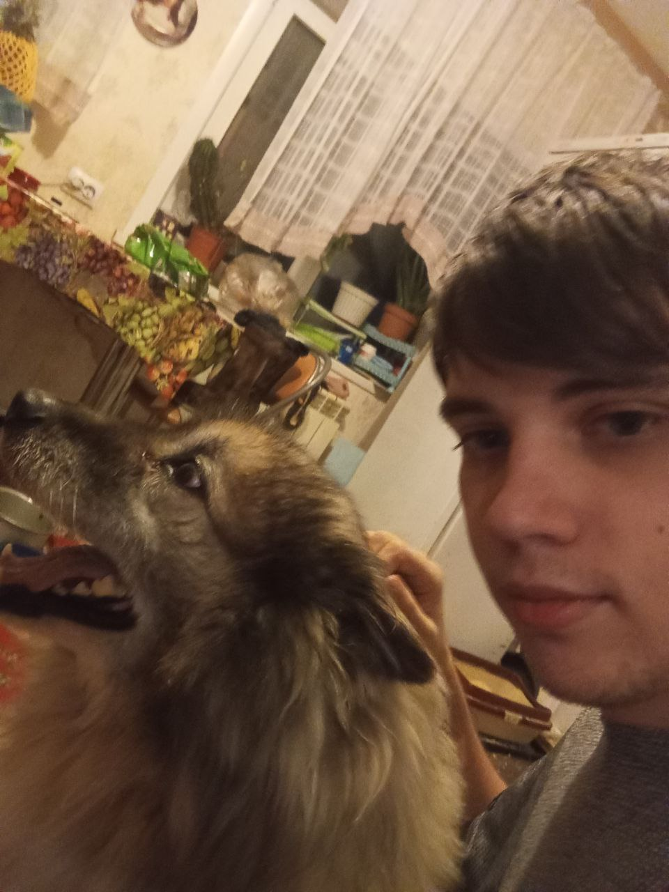

«Тепло сердец»
Роль: Координатор волонтёров
Помощь в организации досуга и бытовая поддержка пожилых людей в пансионате.
Волонтёр и социальный активист
Навыки
Проекты
Роль: Координатор волонтёров
Помощь в организации досуга и бытовая поддержка пожилых людей в пансионате.
Роль: Организатор
Распределение инвентаря, координация зон высадки деревьев и работа с прессой.
Роль: Фандрайзер
Привлечение спонсоров, организация пунктов сбора литературы и логистика.
Мотивация команды, распределение задач, контроль сроков и разрешение конфликтов.
Взаимодействие со СМИ, ведение социальных сетей, публичные выступления на мероприятиях.
Оценка эффективности акций, подсчёт собранной помощи, подготовка отчётов для партнёров.
